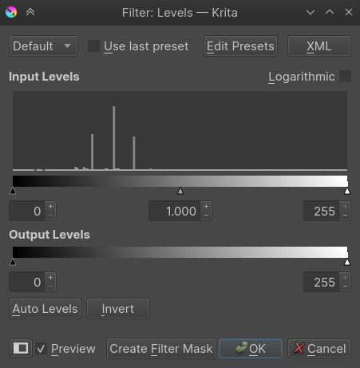
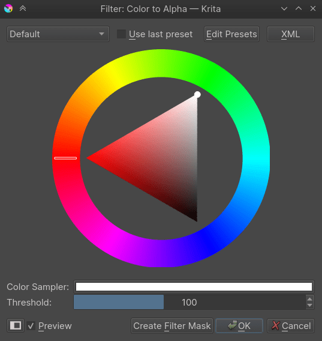
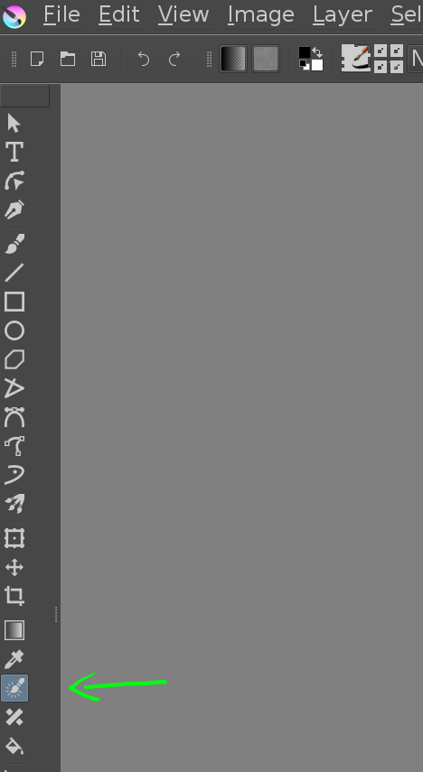
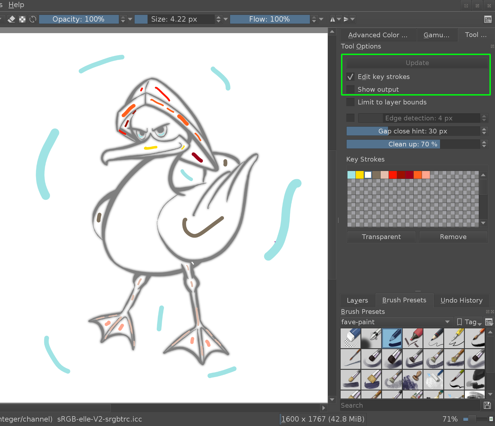
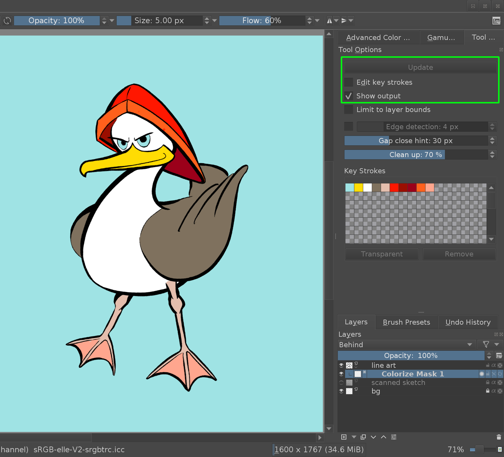
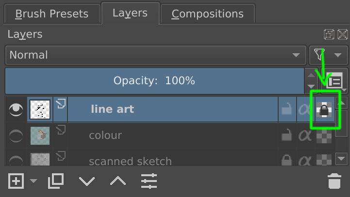
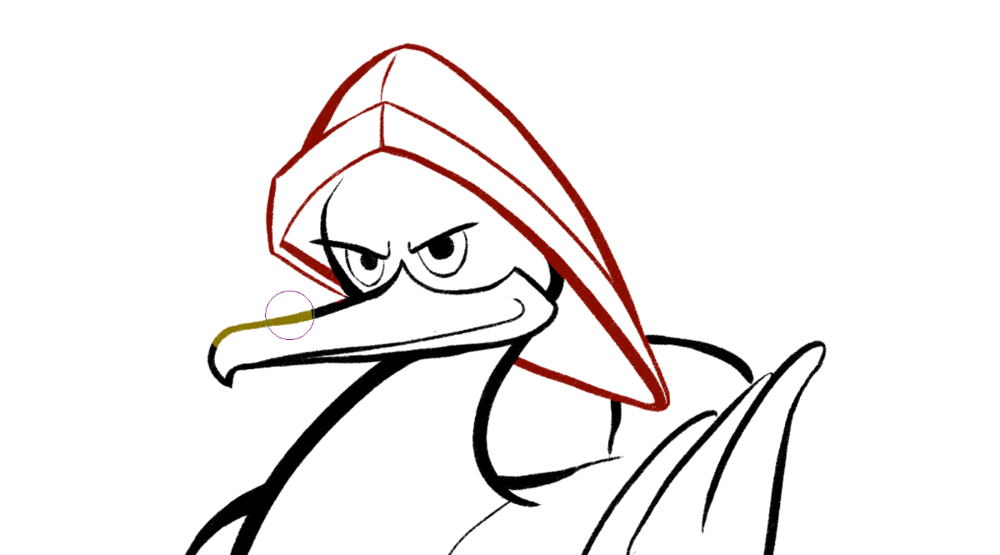

常用工作流程¶
Krita 的主要目標是幫助藝術家從零開始創作數字繪畫。 Krita 被世界各地的漫畫藝術家、接景藝術家、紋理藝術家和插畫家使用。 本章節介紹藝術家在 Krita 中使用的一些常見工作流程。 當您第一次在 Krita 中打開一個新文檔時，可以立即開始繪畫。 預設的情況下選擇畫筆工具，只需在畫布上繪畫。 接下來，讓我們看看藝術家們在 Krita 中做了什麼。 以下是 Krita 中使用的一些常見工作流程：
速寫及概念繪製¶
一些藝術家只在數位媒體上工作，從頭開始在 Krita 中繪製和視覺概念。 顧名思義，一種在幾個小時內完成的繪畫技術，可以快速視覺化場景的基本環境、角色、外觀和感覺，或者表示氛圍情緒和整體概念，稱為 快速繪畫。 完搞或更精細的細節不是這類繪畫的主要目標，但形式價值和構圖佈局的表現是主要目標。
也有些藝術家設定了完成繪畫的時間限制，另一些藝術家則隨意繪畫。 然後可以通過添加更精細的細節和潤色來更進一步完成速度繪畫作品。 通常，藝術家會先利用添加平面顏色的塊面和斑點、定義輪廓等簡單手法在構圖中進行切塊。Krita 有一些針對這種情況的有效畫筆，例如，**我的最愛標籤**下的 Marker Dry 等。
在構圖和基本佈局配置好後，藝術家在有限的時間內盡可能的增添加細節，這需要對形式、想法視角和比例有相當的了解。 下面是 David Revoy 在一個小時內完成的速寫範例。

藝術創作 作者 David Revoy， 授權 : CC-BY
可以查看上圖錄製的速寫演示影片 on Youtube.
著色時線稿¶
通常，藝術家（例如漫畫家）需要使用鉛筆素描或其他線稿創作，然後使用 Krita 在其線稿下方進行繪製上色。 這線稿可以是數位創作出來的圖像，也可以是在電腦外部繪製完成後經過掃描的線稿。
線稿準備¶
如果圖像具有白色或其他單色的背景，就可以使用以下任一方法來為線稿進行著色：
請將線搞放在圖層的最頂部，並將其混合模式設定為 色彩增值。
如果你想稍微清理一下藝術線條，你可以按 Ctrl + L 快速鍵或是到 。
可以使用色階濾鏡中的白色三角形向左移動來清除不需要的灰色，或利用將黑色三角形向右移動來使深色變的更暗。
如果線稿是用藍色鉛筆，那麼在線條上塗上墨水，可能需要先刪除藍色線條，然後轉到 或是使用快速鍵 Ctrl + M 。

從下拉列表中選擇**Red**，單擊圖表右上角的節點並將其一直向下滑動。 或者您可以單擊右上角的節點並在輸入字段中輸入**0**。 對 Green 也重複此步驟。

現在整個圖面會有一個藍色的覆蓋，放大檢查藍色筆線是否仍然可見。 如果仍然看到，請轉到顏色調整中的**藍色**通道並將右上角的節點向左移動一點，或者在輸入框中輸入一個大約 190 的值（刪除剩餘粗線的值）。

接著套用色彩調整濾鏡，沒錯，我們的作品上還有很多藍色。 請耐心繼續下一步。 然後到 或按 Ctrl + Shift + U 快捷鍵。 現在從列表中選擇:guilabel:最大值。

提示
最好使用非顯色藍( non-photo-blue )色來繪製藍色線條，因為它們很容易去除。 如果您以藍線進行數位繪圖，請使用#A4DDED 顏色，因為它更接近非顯色藍( non-photo-blue )。
也可以在 David Revoy 的教學中了解更多關於從藍色素描到數字繪畫的素描 這裡有 David Revoy 的教學。
在有一個乾淨的黑白線稿後，可能需要擦除白色並只保留黑色線稿，要實現這一點，請到 的選項。 使用對話框將圖像的所有白色區域變為透明。 顏色選擇器預設定為白色。 如果您已導入掃描的作品並且需要為紙張顏色選擇另一種顏色，那麼也可以在這裡進行。
這會將線稿中的白色轉換為 alpha，意思是將使白色變透明，只留下線稿。 您的線稿可以在灰度色彩空間中，這是 Krita 的一個獨特功能，它可以將圖層保持在獨立於圖像的色彩空間中。
填入平整顏色¶
在 Krita 中有很多方法可以將線稿填滿上色，但總結來說，這三種方式比較常見。
用塊刷直接繪製顏色塊。
使用填充工具填充。
使用著色遮罩。
用筆刷遮擋¶
第一種是採用形狀筆刷或使用幾何工具上色的傳統的方法。 類似在紙上使用模擬記號筆刷。 Krita 中有多種方塊畫筆，您可以從畫筆預設選擇器工作視窗的下拉菜單中選擇 Block Tag 並使用其中列出的畫筆(5.0無該標籤，可改用 Shapes fill 筆刷)。
在線稿圖層下方添加一個圖層並開始使用畫筆繪畫。 如果要更正任何區域，可以單點 E 鍵並將相同的畫筆轉換為橡皮擦。 還可以為不同的顏色使用一個圖層，以獲得更大的靈活性。
用填滿工具填滿¶
第二種方法是使用大量填充工具快速填滿大部分的區塊。 這種方法的條件是需要封閉的線稿圖。 首先，將線稿放在單獨的圖層上。 然後使用填充工具並將 擴大選取區域 設定為 2px，如果有選取區域，如果之前檢查過，也請先取消選取 取樣:目前圖層 。

從進階選色器中選擇一種顏色，然後單擊要填充顏色的區域。 當我們使用擴大選取區域填充時，顏色將在線條藝術下方略微外擴填充 ( 取樣請選 : 所有圖層 )，這樣我們就可以得到較乾淨的填充 ( 不會有白邊 )。
著色遮罩¶
第三種方法是用內建的 著色遮罩工具。這是一個強大的工具，可以顯著改善您的工作流程並減少您的製作時間。要使用著色遮罩時，請點選圖層中的線稿，或是群組圖層 ( 當線稿為多圖層時 )，並使用 Colorize Mask Editing Tool 如下圖的工具圖示。
{kind=link}
啟用著色遮罩編輯工具後，點擊畫布——將會在同層中增加一個著色遮罩圖層，這時的線稿看起來會有點模糊。 現在便可以用實心筆刷來標記，哪些區域應該用什麼顏色：
每當您按下工具選項中的 Update 按鈕時， 會看到哪些顏色將填充哪些區域。 您可以繼續編輯筆觸，直到滿意為止。 要暫時看到完整結果 ( 沒有模糊的感覺 )，請關閉“編輯關鍵筆刷”的選項：
完成後，可將著色遮罩圖層轉換為一般的顏料圖層。 查看 著色遮罩工具 手冊以了解有關此工具的詳細說明。
改變線稿顏色¶
要更改線稿的顏色，可以使用 鎖定Alpha 的功能。 在圖層工作介面中，點擊線稿圖層最右側的圖示。 這個圖示看起來像一個小棋盤格：
{kind=link}
啟用 鎖定Alpha 後，就只能更改像素的*顏色*，而不能改變透明度——這表示繪製的所有內容只會更改現有線條的顏色，而畫不出新的線條。
如果想將線稿的顏色更改為一種純色，那麼現在可以使用填充工具，它就只會在線條上填色。 或是，想將幾種不同的顏色應用於線稿的特定區域，也可以使用粗的筆刷快速掃繪線稿：
繪製¶
從混亂開始¶
在這裡，首先利用隨機的形狀和紋理亂弄一通，然後由此產生的混亂畫面中找尋靈感與方向，這可以形成各種概念。 有點像從雲中製作點東西來，或者在抽象和隨機的畫面中找到可識別的形狀。 許多概念藝術家都會用這樣的技巧。
可以使用形狀刷或噴刷之類的筆刷來繪製許多不同的形狀，並從中產生的雜點中讓大腦挑選出可用的形狀和構圖。

接著，可以細化這些形狀，使其看起來更像您認為看起來的樣貌，並使用普通畫筆對其進行繪製。 這種方法最好在繪畫環境中完成。
從一個深色基底開始¶
這種方法起源於古老的油畫畫法：先畫一個底色，然後在上面塗上顏色，讓暗面反向發光。
使用 Krita，可以為此目的使用混合模式。 在圖層工作介面的頂部上選擇顏色混合模式，可以讓畫面在不改變相對亮度的情況下更改圖像的顏色。 這很實用，因為與飽和度和色調的差異相比，人類對色調差異更敏感。 這將可以在進入細修階段的顏色，以灰階工作。
您可以找到有關此技術的更多信息 here.
準備貼花圖樣和紋理¶
許多藝術家使用 Krita 為用於遊戲動畫等的 3d 資源創建紋理貼圖。Krita 有許多紋理模板供您選擇並開始創作紋理。 這些模板具有用於紋理工作流程的通用尺寸、深度和顏色的程序參數。
Krita 還具有即時無縫模式，可幫助紋理藝術家輕鬆準備平鋪和紋理，並即時檢查其是否無縫。 平鋪模式稱為四方連續環繞模式，要開啟此模式 :View --> Wrap Around Mode 。 開啟後現在，當繪製時，就可以創作無縫圖案和紋理，在此模式下準備聯鎖圖案和圖形也很容易。
創作像素藝術¶
Krita 還可用於創建高清像素畫。 像素藝術外觀可利用索引濾色層和疊加抖動圖案來實現。 一般的圖層堆疊排列如下所示 ( 注意最上層為"濾鏡圖層"該濾鏡使用 "索引色彩" )。
索引顏色過濾器將選擇的特定顏色映射到作品的灰階中。 可以看到下面的示例，黑白漸變下方的條帶應用了索引顏色，讓黑白漸層變為指定的顏色。
可以在索引顏色過濾器介面中選擇所需的顏色和調整漸變，如下所示。

抖色可用於增強作品的外觀並降低索引濾色器出現帶狀。 Krita 預設有多種抖色模式，這些可以在圖案工作介面中找到。 可將這些圖案用作填充圖層，然後將混合模式設置為 色彩增值 並根據自己的喜好調整不透明度。 通常，10% - 25% 的不透明度會是理想的範圍。
以灰階繪製作品並在頂部添加索引色彩的濾鏡圖層，然後在該濾鏡圖層下作品圖層之上增加抖色用的圖案填充圖層，如上面的圖層堆疊排列。 可以在任何階段繪製或調整作品，因為我們已將索引顏色過濾器增加為動態效果層。
可以為不同的顏色添加不同的群組，並為每個群組增加不同的抖色模式。
下面是一個使用這種圖層結構的排列方式範例。